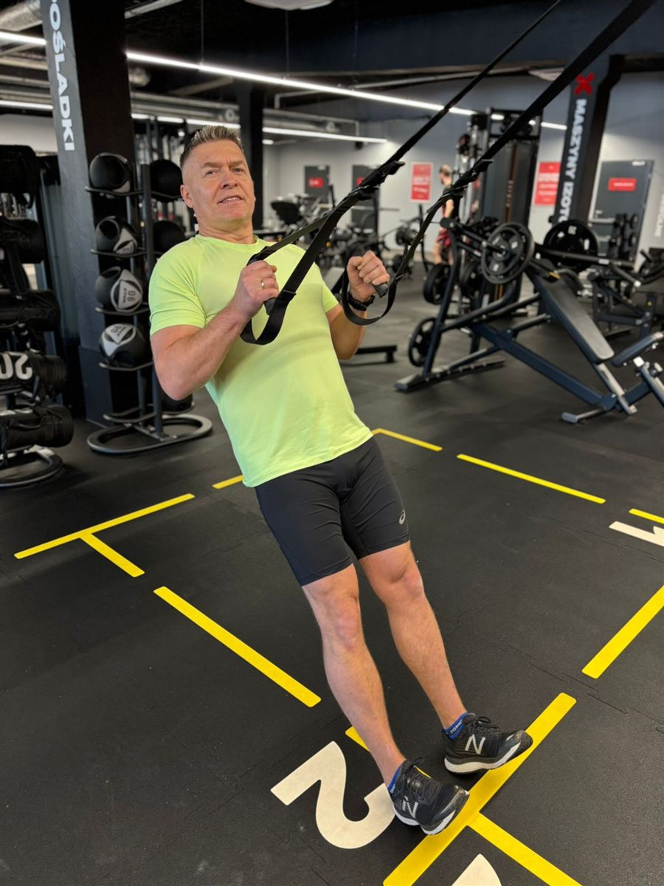

Bezpieczny ruch bez bólu, indywidualna diagnostyka i mierzalne rezultaty. Specjalizuję się w pracy z osobami 40+ i tymi, którzy wracają do aktywności po przerwie.
Jestem akredytowanym trenerem personalnym (EQF Level 3, REPs Polska / ICREPs) z Morąga. Specjalizuję się w treningu funkcjonalnym i diagnostyce ruchowej dla osób 40+. Treningi prowadzę w Morągu, w dobrze wyposażonej strefie funkcjonalnej.
Trening ma wspierać codzienne funkcjonowanie i jakość życia, nie tylko wygląd. Zanim zaczniemy, przeprowadzam diagnostykę funkcjonalną wzorców ruchowych — identyfikuję deficyty i buduję program pod Twoje możliwości i historię zdrowotną.
Pracuję z osobami wracającymi do aktywności po długiej przerwie, z tymi, którzy chcą trenować świadomie i bez ryzyka kontuzji, oraz z kandydatami do służb mundurowych (policja, straż, wojsko). Stawiam na prostotę, skuteczność i konsekwencję — bez przypadkowych ćwiczeń i gotowych schematów.
Magister
Gym Instructor & Fitness Trainer — EQF 3
Diagnostyka funkcjonalna w treningu
Core i mobilność 2.0
Programowanie i planowanie treningu
Dietetyka osób z nadwagą i otyłością
Bezpieczeństwo
Technika i kontrola ponad ciężar. Zero treningu „na ból”.
Biomechanika
Ćwiczenia dobrane do Twojej budowy, mobilności i historii urazów.
Mierzalny postęp
Testy i pomiary co 4–6 tygodni. Widzisz efekty w liczbach.
Nie wierzę w drogi na skróty. Niezależnie od tego, czy potrzebujesz solidnego planu na start, czy kompleksowej, wielomiesięcznej transformacji ze wsparciem żywieniowym i analizą wideo — przeprowadzę Cię przez ten proces bez ściemy i marnowania czasu.
Plan Treningowy 30 Dni
119 zł / jednorazowo
Dla kogo: osoby średniozaawansowane, które chcą przełamać stagnację na siłowni lub wdrożyć strukturę, trenując samodzielnie.
Indywidualny plan na 3 lub 4 dni w tygodniu, dopasowany do Twojego sprzętu (siłownia lub dom)
Precyzyjne parametry: tempo, objętość i RIR — zamiast treningu do odcięcia
Trening pod specyfikę służby. Bez zbędnego gadania.
W Twojej pracy nie ma miejsca na kontuzje z powodu źle dobranej rutyny. Jako funkcjonariusz potrzebujesz bezawaryjności, mocnego gorsetu mięśniowego (chroniącego kręgosłup pod sprzętem), wytrzymałości tlenowej i siły użytkowej.
Opracuję dla Ciebie program, który realnie przełoży się na Twoje bezpieczeństwo i wyniki w terenie — bez względu na to, czy pracujesz na zmiany, czy przygotowujesz się do trudnych testów sprawnościowych.
Pakiet mundurowy
Sprawność i Gotowość Bojowa (90 Dni)
450 zł / 3 miesiące
Cena specjalna dla służb · ok. 150 zł miesięcznie
Dla kogo: funkcjonariusze policji, żołnierze, strażacy oraz osoby przygotowujące się do testów sprawnościowych do służb. Dla tych, dla których trening to nie „pompowanie bicepsa do lustra”, ale narzędzie pracy chroniące zdrowie i życie w terenie.
Specjalistyczny plan treningowy (3 miesiące): trening funkcjonalny, wytrzymałość siłowa, zdrowy kręgosłup (obciążenia pasem taktycznym i kamizelką) oraz profilaktyka kontuzji kolan i odcinka lędźwiowego
Moduł przygotowania do testów (opcjonalnie): specyfika oficjalnych testów sprawności fizycznej poszczególnych formacji — bieg wahadłowy, rzut piłką lekarską, tor przeszkód, podciąganie, brzuszki
Strategia żywieniowa bez restrykcji: elastyczne podejście dopasowane do pracy zmianowej, nocek, dyżurów i gotowości do akcji
Analiza wideo techniki: zarzuty, martwe ciągi, wyciskania i praca z odważnikami kulowymi — tak, by unikać kontuzji wyłączających ze służby
Stały kontakt i raporty online: cotygodniowy raport dopasowany do grafiku służbowego
Gotowe plany treningowe oparte na sprawdzonych strukturach
Trenuj z głową, niezależnie od tego, czy ćwiczysz na siłowni, czy realizujesz plan hybrydowy.
Zapomnij o przypadkowych ćwiczeniach z internetu. Moje autorskie programy opierają się na sprawdzonych strukturach Full Body Workout (FBW), periodyzacji falowej oraz ścisłej kontroli intensywności za pomocą wskaźnika RIR (Repetitions in Reserve). Każdy plan to kompletna mapa drogowa do budowania siły i sprawności.
Full Body Workout
Periodyzacja falowa
Kontrola RIR
Cykle 4-tygodniowe
Plany treningowe dla mężczyzn
Plan treningowy · PDF
Program FBW (Siła i Hipertrofia)
Średniozaawansowany
Cykle 4-tyg.
3× w tygodniu
Dla kogo: dla osób średniozaawansowanych szukających zrównoważonego rozwoju sylwetki i siły w cyklach 4-tygodniowych.
Rozpiska ćwiczeń na każdy tydzień cyklu
Optymalna kolejność angażowania centralnego układu nerwowego
Trening to proces. Każdy etap ma swój cel, a każda decyzja — uzasadnienie. Bez przypadkowych ćwiczeń i gotowych schematów.

01
Diagnostyka i wzorce ruchowe
Oceniam przysiad, zawias biodrowy, pchanie, przyciąganie i noszenie. Najpierw jakość ruchu, potem obciążenie.
02
Periodyzacja
Plan dzielę na etapy z jasnym celem: adaptacja, budowa siły, moc, deload. Organizm ma czas na regenerację i adaptację.
03
Praca na rezerwie (RIR / RPE)
Trenujesz blisko, ale nie do upadku mięśniowego. Kontrolowana intensywność daje postęp bez przeciążeń i wypalenia.
04
Pomiar i progresja
Podwójna progresja, testy kontrolne i dziennik treningowy. Plan modyfikujemy na podstawie wyników, snu i samopoczucia.
Efekty
Realne rezultaty podopiecznych
Wybrane historie współpracy. Imiona i dane publikowane za zgodą klientów.
−9 kgmasy ciała
0/10ból pleców
„Po latach pracy przy biurku plecy bolały mnie codziennie. Po kilku miesiącach nie pamiętam, kiedy ostatnio brałem tabletki przeciwbólowe.”
Zdanytest sprawności
12 tyg.przygotowań
„Przygotowanie do testu do policji ułożone co do tygodnia. Na teście czułem się pewnie — wynik z dużym zapasem.”
Pełnyzakres w barku
3×/tydz.regularnie od roku
„Po pięćdziesiątce jestem sprawniejsza niż dekadę temu. Wnuki nie nadążają!”
+30 kgw martwym ciągu
0kontuzji
„Wróciłem do treningów po 10 latach przerwy. Wszystko krok po kroku, bez bólu i bez pośpiechu — a siła rośnie co miesiąc.”
Paliwo dla organizmu
Kuchnia łącząca światy: energia, białko i smak
Autorskie przepisy inspirowane kuchnią europejską i azjatycką, stworzone z myślą o regeneracji i czystej masie mięśniowej.
Dieta nie musi być nudna. W mojej kuchni eksperymentuję, łącząc tradycyjne techniki europejskie z wyrazistymi, azjatyckimi smakami. Skupiam się na wysokiej jakości białku (mięso i drób), nieprzetworzonych składnikach oraz kompozycjach, które idealnie wspierają regenerację po ciężkim treningu siłowym.
Kuchnia azjatycka
Po treningu
Źródło żelaza
Szybkie
Wołowina po tajsku z makaronem ryżowym i warzywami stir-fry
Szybkie, bogate w pełnowartościowe białko i żelazo danie o niskim stopniu przetworzenia, idealne na posiłek po treningu siłowym.
Pełny przepis wkrótce
Kuchnia europejska
Wysokobiałkowe
Jednogarnkowe
Regeneracja
Kurczak z batatami, ciecierzycą i jarmużem z jednego garnka
Rozgrzewające danie łączące pełnowartościowe białko z węglowodanami złożonymi z batatów — tradycyjny smak i nowoczesne makro, które wspiera regenerację.
Tak — to moja specjalizacja. Plan dopasowuję do aktualnego poziomu, a pierwsze tygodnie to nauka podstawowych wzorców ruchowych bez dużych obciążeń. Tempo dobieramy tak, żeby organizm nadążał.
W większości przypadków tak, a dobrze dobrany trening siłowy często zmniejsza dolegliwości. Zaczynamy od diagnostyki funkcjonalnej. Przy ostrych objawach lub świeżych urazach najpierw kieruję do lekarza lub fizjoterapeuty — nie stawiam diagnoz medycznych.
Tak. Plan budujemy pod konkretne wymagania testu kwalifikacyjnego — siłę, wytrzymałość i sprawność ogólną — z regularnymi próbami kontrolnymi, żeby w dniu egzaminu nie było niespodzianek.
Poprawę samopoczucia i jakości ruchu zauważysz zwykle po 3–4 tygodniach. Wyraźne zmiany siły i sylwetki — po 8–12 tygodniach regularnych treningów. Postęp mierzymy testami co 4–6 tygodni.
Optymalnie 2–3 razy w tygodniu po 45–60 minut. Plan układam pod Twój realny kalendarz — lepiej 2 treningi regularnie niż 5 przez dwa tygodnie.
Tak, w ramach współpracy otrzymujesz wytyczne dotyczące kaloryczności, białka i nawyków żywieniowych — mam ukończone szkolenie z dietetyki osób z nadwagą i otyłością. Przy jednostkach chorobowych kieruję do dietetyka klinicznego.
To bezpłatna, ok. 30-minutowa rozmowa na miejscu w Morągu lub telefonicznie. Omawiamy Twój cel, historię zdrowia i dostępny czas, a ja proponuję najlepszą formę współpracy. Bez zobowiązań.
Kontakt
Zrób pierwszy krok
Zadzwoń lub zostaw wiadomość — umówimy bezpłatną konsultację.